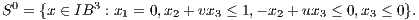
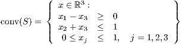
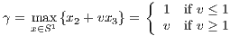
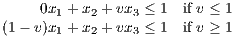
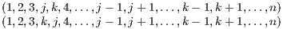
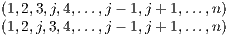
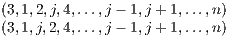
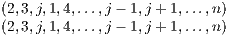
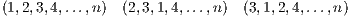
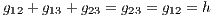

- (a)
- Give an inequality description of the convex hull of S.
- (b)
- For any two scalars u and v, the set S0 can be written:
 Show that there is only one choice of v for which the lifted version of the constraint x2 + vx3 ≤ 1 defines a facet of S.
Solution:
- (a)
- We have
 
- (b)
- We have S0 = {(0,0,0),(0,1,0)} and S1 = {(1,0,0),(1,1,0),(1,0,1)}. The lifted constraint is found by
solving the subproblem
 The lifted constraint is
 This is a facet of S if and only if v = 1.
Solution:
We prove the result by contradiction: we assume the vectors are linearly dependent and show they are affinely dependent.
Assume there exist multipliers λi, not all zero, satisfying ∑ i=1kλixi = 0. Then from the given condition, we have
so ∑ i=1kλi = 0. Hence the vectors satisfy ∑ i=1kλixi = 0 with ∑ i=1kλi = 0 and not all λi zero. Hence the vectors are affinely dependent.
Solution:
Assume there is another valid inequality gTx ≤ h that implies the given triangle inequality, so gTx = h whenever the triangle inequality holds at equality. Note first that h ≥ 0, since the zero vector is feasible: take the ordering (n,…,1). We determine the coefficients of g by considering various orderings where the triangle inequality holds at equality.
- Edges of the form (j,k) with 4 ≤ j < k ≤ n:
The triangle inequality is tight for the two orderings
 Since gTx = h for both these orderings, we must have gjk = 0.
- Edges of the form (3,j) for 4 ≤ j ≤ n: The triangle inequality is tight for the two orderings
 Since gTx = h for both these orderings, we must have g3j = 0.
- Edges of the form (2,j) for 4 ≤ j ≤ n: The triangle inequality is tight for the two orderings
 Since gTx = h for both these orderings, we must have g2j = 0.
- Edges of the form (1,j) for 4 ≤ j ≤ n: The triangle inequality is tight for the two orderings
 Since gTx = h for both these orderings, we must have g1j = 0.
- Edges of the form (i,j) for 1 ≤ i < j ≤ 3: The triangle inequality is tight for the three
orderings
 Since gTx = h for all these orderings, we must have
 so g12 = -g13 and g23 = -g13.
If h = 0 we get the trivial inequality 0Tx ≤ 0. If h > 0, we get a rescaling of our original triangle inequality. Hence the triangle inequality is not implied by any other nontrivial valid inequality, so it is a facet-defining inequality.
using a cutting plane algorithm, solving LP relaxations and adding violated triangle inequalities of the forms
Solution:
We have the valid triangle inequalities
corresponding to collections of three objects. Adding these inequalities gives the inequality of interest. Hence the given equality can only hold at equality if both of the triangle inequalities hold at equality. Since the feasible region is full-dimensional and the two triangle inequalities are linearly independent, the given inequality gives a face of dimension at most dim(S) - 2, so it is not facet-defining.